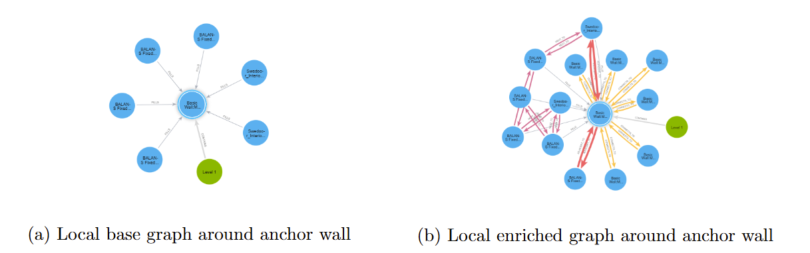
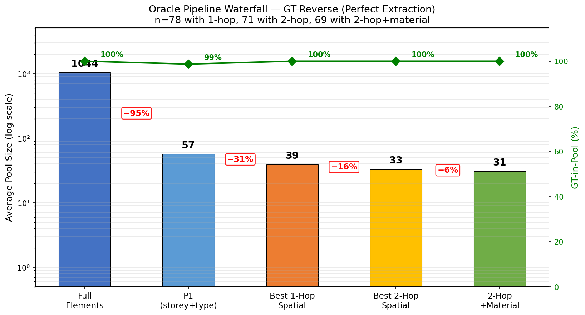
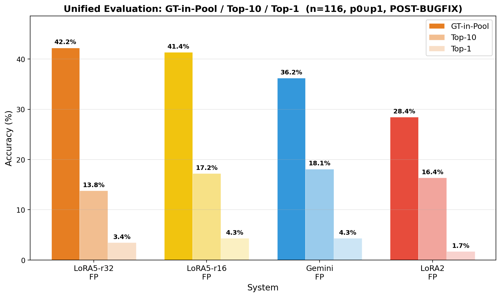

🔄️ AEC Interpreter: Neuro-Symbolic AI for BIM Retrieval
An AI middleware that bridges the gap between physical and digital data in construction — linking unstructured site evidence to the correct BIM elements, down to the GUID level.
Tech Stack: Python · Gemini 2.5 Flash · Qwen2.5-VL-7B · LoRA (Unsloth) · LangGraph · FastMCP · Neo4j · IfcOpenShell · Pydantic · Modal (A100)

Live demo: The system ingests multimodal site data (left/center) and deterministically retrieves the exact element GUID in the 3D BIM viewer (right).
The Problem
AEC Interpreter is an AI middleware I built for my thesis that bridges the gap between physical and digital data in construction. Specifically, it links unstructured site evidence — photos, chat messages, floorplans — to the correct elements in a structured BIM model, down to the GUID level.
In Southeast Asia AEC, this linking is part of government submission procedures — currently done entirely by hand, updated maybe once a month, causing delayed updates, information loss, and wasted manual effort. Before AI can analyze what an issue is, it must conclusively solve where it is. When a floor contains 46 geometrically identical windows, that's a ~2.2% baseline — a mathematical deadlock that attribute-only methods cannot break.
The Approach
A neuro-symbolic architecture in two stages: neural perception (fine-tuned VLM extracts structured spatial cues from multimodal input) → symbolic retrieval (deterministic Cypher queries against an IFC knowledge graph in Neo4j). No LLM involvement in the retrieval path. The system can only return elements that exist in the IFC model — it cannot hallucinate a GUID.
1. The Broken Workflow: Solving the "WHERE"
On-site Challenge

Interpreter Solution:

A typical retrieval issue

The Stakeholder Disconnect
Construction execution is fundamentally disjointed. Developers track progress via spreadsheets, architects rely on pristine 3D models, and subcontractors report issues using messy photos and fragmented chats (e.g., a circled floorplan with "hinge issue").
The Mathematical Deadlock (Attribute Entropy)
When a floor contains 46 geometrically identical windows, relying on standard Vision AI for visual matching yields a mathematical deadlock (~2.2% baseline accuracy). Before AI can analyze what an issue is, it must conclusively solve where it is. Otherwise, any digital twin update is inherently hallucinated.
The Visual vs. Geometric Semantics Gap
Generic Vision-Language Models rely purely on visual semantics—they look for pixels resembling a window. However, AEC operates on geometric semantics. A 6th-floor window looks identical to a 3rd-floor window. To succeed, the AI must comprehend underlying 3D architectural topology, translating 2D visual evidence into precise spatial relationships.
The Solution
To bridge this gap, the AEC Interpreter acts as an intelligent middleware, using multimodal grounding to anchor unstructured site data into strict IFC schemas before any data entry occurs.
The Impact of Multimodal Grounding & Schema Alignment:
- Baseline (Text-Only): A simple text query ("Which window?") on a floor with 46 identical windows yields ~2.2% precision — effectively a random guess.
- Neuro-Symbolic Pipeline: The fine-tuned VLM extracts structured constraints, compiled into deterministic Cypher queries. Under perfect extraction (GT-Reverse Oracle), the pool compresses from 917 to 31 candidates — a 96.6% reduction with 100% GT retention. With current learned models, the best system retains GT in 42% of cases within a pool of ~70.
- Zero-Hallucination Guardrails: Pydantic schema validation ensures 100% format compliance. The symbolic layer can only return elements that exist in the IFC model — the system cannot invent a GUID.
Ultimately, the system does not learn to probabilistically "guess" the right element; it learns to comprehend the underlying 3D building topology and its rigid architectural relationships.
2. System Architecture: The Neuro-Symbolic Engine
To eliminate the hallucination risks inherent in parsing highly subjective visual inputs, the architecture evolved from a baseline ReAct agent (V1) to a deterministic Neuro-Symbolic pipeline (V2).

The Baseline: Agent-Driven (V1)
Initially deployed as a LangGraph ReAct agent utilizing FastMCP for dynamic IFC tool calling. While functional out of the box, it proved non-deterministic, suffered from high latency (~4.5s/API call), and remained highly vulnerable to open-domain hallucinations.
The Solution: Constraints-Driven Neuro-Symbolic Layer
The final architecture replaces free-form LLM reasoning with an explicit constraint extraction → deterministic query planning pipeline. This effectively bridges the semantic gap between probabilistic visual perception and rigid geometric databases.

1. The Neuro Layer (Perception)
A highly optimized Vision-Language Model (Qwen2.5-VL-7B fine-tuned via LoRA) digests noisy, multimodal site inputs to extract precise structural constraints.
- Relation-Region Crops: To overcome VLM "Shortcut Learning" (where models guess spatial relationships based on language priors), the VLM is trained explicitly on the interface boundaries between elements. This forces it to extract physical topological predicates like
ADJACENT_TOorCONTINUOUSbased on actual visual evidence.

The Pydantic Contract (The Bridge)
The Neuro layer is not allowed to generate free text. It must output a strictly typed Pydantic schema. This acts as the impenetrable boundary between the probabilistic AI perception and the deterministic backend.
{
"storey_name": "6 - Sixth Floor",
"ifc_class": "IfcWindow",
"spatial_relation": "ADJACENT_TO",
"spatial_relation_neighbor_type": "IfcColumn"
}2. The Symbolic Layer (Retrieval)
The extracted JSON schema passes through a Python template compiler to generate a Cypher query. Crucially, there is zero LLM involvement in this final step. The deterministic graph traversal runs directly against the Neo4j/IFC graph database, guaranteeing 100% ontological compliance and zero hallucination.
// Auto-compiled Cypher Query executed against Neo4j
MATCH (window:IfcWindow)-[:CONTAINED_IN]->(wall:IfcWall),
(column:IfcColumn)-[:ADJACENT_TO]-(wall),
(window)-[:ADJACENT_TO]-(column)
RETURN window.GlobalId AS TargetWindowID
IFC Knowledge Graph Enrichment: The base IFC graph (left) contains only vertical containment and fill relations. The enriched graph (right) adds lateral topology edges — CONNECTS_TO, ADJACENT_TO, NEXT_TO — enabling multi-hop spatial queries that disambiguate geometrically identical elements.
3. Data Pipeline: Overcoming the Data Bottleneck
Because real construction site data is highly confidential and lacks structured spatial annotations, I engineered a fully automated synthetic data pipeline—the "Skeleton-Skin" architecture—to train the Neuro layer with zero manual labeling.

The "Skeleton-Skin" Concept
The pipeline uses deterministic IFC geometry (the "skeleton") to mine ground-truth topological triplets. It then uses headless Blender and Gemini to wrap this geometry in a noisy, multimodal "skin" (photoreal site photos, floorplan patches, and fragmented chat logs) to simulate real-world entropy.
// Automated Multimodal Data Generation Pipeline
1. IFC Parsing: Extract element index (attributes, storey, class) via IfcOpenShell.
2. Skeleton Mining: Extract ground-truth spatial triplets (e.g., Window FILLS Wall).
3. Spatial Cropping: Render relation-crops via headless Blender (Subject + Anchor).
4. Skin Generation: Gemini 2.5 Flash converts wireframes → photorealistic site photos.
5. Context Assembly: Generate matplotlib floorplan patches from 2D IFC geometries.
6. ChatML Formatting: Compile multimodal inputs into Qwen2.5-VL LoRA training data.LoRA Fine-Tuning Details
The model was fine-tuned to map the noisy "skin" inputs strictly back to the topological "skeleton" constraints.
Model: Qwen2.5-VL-7B-Instruct (4bit)
Adapter: LoRA (r=16, alpha=32)
Dataset: 1,377 multimodal cases
Hyperparams: 5 Epochs, LR 2e-4
Batch Size: 16 (Effective)
Hardware: Modal A100 (40GB)
Latency: ~1s (local LoRA) vs ~4.5s (API)The Schema Contract (Output)
The fine-tuned VLM's output is strictly constrained to this JSON format, acting as the deterministic blueprint for the Cypher graph query.
{
"storey_name": "3 - Third Floor",
"ifc_class": "IfcWindow",
"spatial_relations": [
{
"predicate": "ADJACENT_TO",
"object_type": "IfcRailing",
"confidence": 1.0
}
]
}4. Evaluation & Results
Evaluation is designed across two tiers matching the pipeline stages: Neuro (VLM extraction quality) → Symbolic (graph retrieval accuracy). The unified evaluation spans 116 test cases across 3 IFC models (AP: 1,233 elements, BH: 53 elements, DXA: 258 elements).
4.1 Architecture Soundness: GT-Reverse Oracle
The most important result. The GT-Reverse Oracle looks up each GT element's actual attributes and outgoing edges in Neo4j, then runs Cypher queries using those ground-truth properties. This establishes the theoretical upper bound: under perfect extraction, the symbolic layer achieves 100% GT-in-Pool at all spatial stages, compressing the candidate pool from 917 to 31 — a 96.6% reduction with perfect recall.

| Stage | n | Avg Pool | Reduction | GT-in-Pool |
|---|---|---|---|---|
| Full elements | 100 | 1044 | — | 100% |
| P1 (storey+type) | 100 | 57 | −95% | 99% |
| 1-hop spatial | 78 | 39 | −31% | 100% |
| 2-hop spatial | 71 | 33 | −16% | 100% |
| 2-hop + material | 69 | 31 | −6% | 100% |
This proves the symbolic layer is provably correct. The gap between Oracle (100%) and the best learned model (42.2%) is entirely due to VLM extraction errors — a solvable problem, not an architectural one.
4.2 Neuro layer, VLM Extraction Comparison (n=116, 3 IFC Models)
Four extraction systems compared on the same unified test set with the optimal p0∪p1 (union) query strategy:

| System | GT-in-Pool | Top-1 | MRR@10 | Avg Pool |
|---|---|---|---|---|
| LoRA₅-r32 (fine-tuned, spatial) | 42.2% | 3.4% | 0.057 | 70 |
| LoRA₅-r16 (fine-tuned, spatial) | 41.4% | 4.3% | 0.074 | 68 |
| Gemini 2.5 Flash (zero-shot prompt) | 36.2% | 4.3% | 0.075 | 56 |
| LoRA₂ (attribute-only, no spatial) | 28.4% | 1.7% | 0.050 | 60 |
Key takeaways: The best model retains the correct element in 42% of cases, within a candidate pool of ~70 — down from over 900 total elements. Fine-tuned spatial extraction outperforms zero-shot Gemini by +6pp and attribute-only LoRA₂ by +13.8pp, confirming that topology-based retrieval adds meaningful value beyond attribute filtering alone.
Qualitative Example — LoRA vs. Zero-Shot:
| LoRA (Fine-Tuned) → CORRECT ✓ | Gemini (Zero-Shot) → HALLUCINATION ✗ |
|---|---|
 |
 |
Same multimodal input under the fine-tuned model and gemini(zero-shot) model.
4.3 Decomposable Failure Analysis
Every failure is traceable to a specific pipeline stage — a key advantage of the neuro-symbolic decomposition over black-box neural retrieval:
| Failure Category | % | Root Cause | Improvement Path |
|---|---|---|---|
| ifc_class wrong | 39% | VLM predicts wrong element type → Cypher filters incorrectly | Class-balanced training, confusion-aware hard negatives |
| GT in pool, not Top-1 | 24% | Retrieval works but no learned reranker | Attribute-matching scorer (storey +1, type +1, keyword +1) |
| Storey wrong | 22% | Wrong floor → wrong candidate pool | Floor-indicator visual training, metadata fusion |
| Large pool, no discrimination | 10% | Correct predicate but pool too large for ranking | Tighter spatial constraints, multi-hop refinement |
| Top-1 success ✓ | 5% | — | — |
4.4 Two-Layer Hallucination Resistance
Layer 1 — Schema Alignment (VLM output):
- ✅ Format compliance: 100% valid JSON across all models and conditions — format-level hallucination is eliminated
- ⚠️ Content accuracy: ifc_class ~63%, storey ~82% (unified) — field-level accuracy remains the primary improvement target
Layer 2 — Symbolic Guardrail (Neo4j execution):
- ✅ Invalid triplets → empty Cypher result → deterministic fallback to attribute-only queries (detectable failure)
- ⚠️ Valid-but-wrong triplets → non-empty incorrect pool (silent failure — requires per-field confidence gating)
The system does not depend on VLM self-restraint for hallucination resistance. The symbolic layer acts as a post-hoc validator: wrong constraints either produce empty results (caught) or wrong pools (addressable via confidence gating).
4.5 Symbolic, Query Strategy Discovery: Union Beats Intersection
A critical engineering finding: when spatial extraction accuracy is imperfect, the query strategy matters as much as extraction quality.
| Strategy | LoRA₅-r32 GT-in-Pool | Description |
|---|---|---|
| p0 ∩ p1 (intersection) | 25.9% | Spatial AND storey+type — over-prunes when spatial is wrong |
| p0 ∪ p1 (union) | 42.2% | Spatial OR storey+type — preserves safety net, +16.3pp recovery |
Key insight: Spatial triplets at current VLM accuracy should be used for pool size compression (avg 40 vs 68 candidates), not GT discovery. Storey+type remains the safety net for GT retention. When one retrieval signal is less mature, use union not intersection.
4.6 Key Research Findings
-
Multi-Task Capacity Tradeoff: Adding spatial triplet supervision to the same LoRA r=16 adapter degrades ifc_class accuracy from >60% to 49.2%. Since ifc_class is a prerequisite for Cypher queries (
WHERE node.ifc_type = $type), this creates a paradox: spatial capability gained at the cost of the attribute accuracy it depends on. Addressable via higher rank (r=32), staged training, or separate extractors. - The Attribute Entropy Deadlock: On a floor with 46 geometrically identical IfcWindows, attribute-only retrieval is mathematically limited to ~2.2% Top-1. The GT-Reverse Oracle breaks this deadlock with 100% GT retention and avg pool of 31 — proving topology-based discrimination is both necessary and achievable.